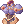
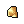

File list
Jump to navigation
Jump to search
This special page shows all uploaded files.
{kind=link}
{kind=link}
| Date | Name | Thumbnail | Size | User | Description | Versions |
|---|---|---|---|---|---|---|
| 01:23, 10 September 2015 | Valkyrian Armor.png (file) |  | 738 bytes | AloeLeaflet | 1 | |
| 01:24, 10 September 2015 | Morrigan's Manteau.png (file) | 527 bytes | AloeLeaflet | 1 | ||
| 01:24, 10 September 2015 | Giant Snake Skin.png (file) | 562 bytes | AloeLeaflet | 1 | ||
| 01:24, 10 September 2015 | Haedonggum.png (file) | 346 bytes | AloeLeaflet | 1 | ||
| 01:25, 10 September 2015 | Crystal Pumps.png (file) | 406 bytes | AloeLeaflet | 1 | ||
| 01:26, 10 September 2015 | Gloria.png (file) | 1 KB | AloeLeaflet | 1 | ||
| 01:26, 10 September 2015 | Lauda Ramus.png (file) | 426 bytes | AloeLeaflet | 1 | ||
| 01:26, 10 September 2015 | Instruction Change.png (file) | 1 KB | AloeLeaflet | 1 | ||
| 01:26, 10 September 2015 | Marionette Control.png (file) | 362 bytes | AloeLeaflet | 1 | ||
| 01:27, 10 September 2015 | Alchemist Spirit.png (file) | 1 KB | AloeLeaflet | 1 | ||
| 01:27, 10 September 2015 | Twilight Alchemy I.png (file) | 1 KB | AloeLeaflet | 1 | ||
| 01:27, 10 September 2015 | Twilight Alchemy II.png (file) | 1 KB | AloeLeaflet | 1 | ||
| 01:27, 10 September 2015 | Twilight Alchemy III.png (file) | 1 KB | AloeLeaflet | 1 | ||
| 01:28, 10 September 2015 | Alcohol.png (file) | 319 bytes | AloeLeaflet | 1 | ||
| 01:29, 10 September 2015 | Morrigan's Manteaux.png (file) | 527 bytes | AloeLeaflet | 1 | ||
| 01:30, 10 September 2015 | Korean Sword.png (file) | 346 bytes | AloeLeaflet | 1 | ||
| 01:35, 10 September 2015 | Vanilmirth Instruction Change.png (file) | 1 KB | AloeLeaflet | 1 | ||
| 01:37, 10 September 2015 | Excaliburnes.png (file) | 467 bytes | AloeLeaflet | 1 | ||
| 01:44, 10 September 2015 | Holy Sword.png (file) | 467 bytes | AloeLeaflet | Excalibur | 2 | |
| 21:44, 13 September 2015 | Clementia.png (file) | 1 KB | AloeLeaflet | 2 | ||
| 04:19, 16 September 2015 | IzludeNoviceQ03.jpg (file) | 43 KB | Renata | Reverted to version as of 03:53, 16 September 2015 | 4 | |
| 23:17, 16 September 2015 | CondensedWhitePotion.png (file) | 416 bytes | AloeLeaflet | 1 | ||
| 23:27, 16 September 2015 | FortuneSword.png (file) | 389 bytes | AloeLeaflet | 1 | ||
| 23:30, 16 September 2015 | 3homunculus.png (file) | 8 KB | AloeLeaflet | 1 | ||
| 23:34, 16 September 2015 | Preevohomun.png (file) | 97 KB | AloeLeaflet | 1 | ||
| 23:35, 16 September 2015 | Callhomunculus.png (file) | 1 KB | AloeLeaflet | 1 | ||
| 23:36, 16 September 2015 | Embryo.png (file) | 411 bytes | AloeLeaflet | 1 | ||
| 23:36, 16 September 2015 | Stoneofsage.png (file) | 468 bytes | AloeLeaflet | 1 | ||
| 23:37, 16 September 2015 | Homevo1.png (file) | 227 KB | AloeLeaflet | 1 | ||
| 23:37, 16 September 2015 | Homevo2.png (file) | 209 KB | AloeLeaflet | 1 | ||
| 23:43, 16 September 2015 | Vanini.png (file) | 19 KB | AloeLeaflet | 1 | ||
| 23:43, 16 September 2015 | Amimi.png (file) | 17 KB | AloeLeaflet | 1 | ||
| 23:44, 16 September 2015 | Fifi.png (file) | 21 KB | AloeLeaflet | 1 | ||
| 23:44, 16 September 2015 | Lili.png (file) | 20 KB | AloeLeaflet | 1 | ||
| 23:46, 16 September 2015 | Scell.png (file) |  | 295 bytes | AloeLeaflet | 1 | |
| 23:46, 16 September 2015 | Zargon.png (file) | 357 bytes | AloeLeaflet | 1 | ||
| 23:46, 16 September 2015 | Garlet.png (file) | 319 bytes | AloeLeaflet | 1 | ||
| 23:47, 16 September 2015 | Petfood.png (file) | 493 bytes | AloeLeaflet | 1 | ||
| 23:47, 16 September 2015 | Caprice.png (file) | 1 KB | AloeLeaflet | 1 | ||
| 23:47, 16 September 2015 | Chaobene.png (file) | 1 KB | AloeLeaflet | 1 | ||
| 23:48, 16 September 2015 | Instrchan.png (file) | 1 KB | AloeLeaflet | 1 | ||
| 23:48, 16 September 2015 | Bioexp.png (file) | 1 KB | AloeLeaflet | 1 | ||
| 23:48, 16 September 2015 | Castling.png (file) | 1 KB | AloeLeaflet | 1 | ||
| 23:48, 16 September 2015 | Amibulw.png (file) |  |
1 KB | AloeLeaflet | 1 | |
| 23:48, 16 September 2015 | Adaskin.png (file) | 1 KB | AloeLeaflet | 1 | ||
| 23:48, 16 September 2015 | Bloodlust.png (file) | 1 KB | AloeLeaflet | 1 | ||
| 23:48, 16 September 2015 | Moonlight.png (file) | 1 KB | AloeLeaflet | 1 | ||
| 23:49, 16 September 2015 | Flitting.png (file) | 1 KB | AloeLeaflet | 1 | ||
| 23:49, 16 September 2015 | Overspeed.png (file) | 415 bytes | AloeLeaflet | 1 | ||
| 23:49, 16 September 2015 | Sbr44.png (file) |  |
441 bytes | AloeLeaflet | 1 |
{kind=link}
{kind=link}